화학분석기사 (2021-03-07 기출문제)
1과목: 화학분석 과정관리
1. 분광광도계에 반드시 포함해야하는 부분장치에 해당하지 않는 것은?
- Integrator
- Detecter
- Readout
- Monochromator
(정답률: 62%)

2. 0.195M H2SO4 용액 15.5L를 만들기 위해 필요한 18.0M H2SO4용액의 부피(mL)는?
- 0.336
- 92.3
- 168
- 226
(정답률: 81%)
3. 아래 화합물의 이름은?
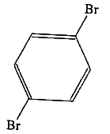
- o-dibromohexane
- p-dibromobenzene
- m-dibromobenzene
- p-dibromohexane
(정답률: 83%)
4. 카르보닐(carbonyl)기를 가지고 있지 않은 것은?
- 알데히드(aldehyde)
- 아미드(amide)
- 에스터(ester)
- 아민(amine)
(정답률: 71%)
5. 16g의 메탄과 16g의 산소가 연소하여 생성된 가스 중 초기공급 가스 과잉분의 비율(mol%)은? (단, 공급된 가스는 완전연소하며, 생성된 수분은 응축되지 않았다고 가정한다.)
- 13
- 25
- 50
- 75
(정답률: 56%)
6. 아래 유기화합물의 명칭으로 옳은 것은?
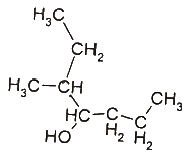
- 3-메틸-4-헵탄올
- 5-메틸-4-헵탄올
- 3-메틸-4-알코올헵탄
- 2-메틸-1-프로필부탄올
(정답률: 69%)
7. 일반적인 분석과정을 가장 잘 나타낸 것은?
- 문제정의 → 방법 선택 → 대표시료 취하기 → 분석시료 준비 → 측정 수행 → 화학적 분리가 필요한 모든 것을 수행 → 결과의 계산 및 보고
- 문제정의 → 방법 선택 → 대표시료 취하기 → 분석시료 준비 → 화학적 분리가 필요한 모든 것을 수행 → 측정 수행 → 결과의 계산 및 보고
- 문제정의 → 대표시료 취하기 → 방법 선택 → 분석시료 준비 → 화학적 분리가 필요한 모든 것을 수행 → 측정 수행 → 결과의 계산 및 보고
- 문제정의 → 대표시료 취하기 → 방법 선택 → 분석시료 준비 → 측정 수행 → 화학적 분리가 필요한 모든 것을 수행 → 결과의 계산 및 보고
(정답률: 74%)
8. 분석용 초자기구에 대한 설명 중 옳은 것을 모두 고른 것은?
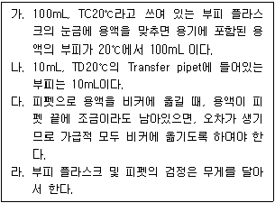
- 가, 다
- 가, 라
- 가, 나, 라
- 가, 나, 다, 라
(정답률: 42%)
9. 크로마토그래피의 이동상에 따른 구분에 속하지 않는 것은?
- 기체 크로마토그래피
- 액체 크로마토그래피
- 이온 크로마토그래피
- 초임계유체 크로마토그래피
(정답률: 64%)
10. 광학기기를 바탕으로 한 분석법의 종류가 아닌 것은?
- GC
- IR
- NMR
- XRD
(정답률: 76%)
11. 알켄의 친전자성 첨가반응의 한 예이다. 아래와 같은 결과를 설명할 수 있는 이론은?
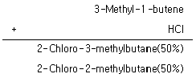
- 카이랄 중심 이동(chiral center shift)
- 수소음이온 이동(hydride shift)
- 라디칼 반응(radical reaction)
- 공명(conjigation)
(정답률: 56%)
12.
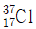
의 양성자, 중성자, 전자의 개수를 옳게 나열한 것은?- 양성자 : 37, 중성자 : 0, 전자 : 37
- 양성자 : 17, 중성자 : 0, 전자 : 17
- 양성자 : 17, 중성자 : 20, 전자 : 37
- 양성자 : 17, 중성자 : 20, 전자 : 17
(정답률: 82%)
13. 계통오차를 검출할 수 있는 방법이 아닌 것은?
- 바탕시험을 한다.
- 조성을 알고 있는 시료를 분석한다.
- 동일한 조건으로 반복 실험을 한다.
- 여러 가지 다른 방법으로 동일한 시료를 분석한다.
(정답률: 59%)
14. 주족원소의 화학적 성질에 대한 설명 중 틀린 것은?
- ⅠA족인 알칼리금속(alkali metal)은 비교적 부드러운 금속으로 Li, Na, K, Rb, Cs 등이 포함된다.
- ⅡA족인 알칼리 토금속(alkaline earth metal)에는 Be, Mg, Sr, Ba, Ra 등이 포함된다.
- ⅥA족인 칼코젠(Chalcogen)에는 O, S, Se, Te 등이 포함되며, 알칼리 토금속(alkaline earth metal)과 2:1 화합물로 만든다.
- ⅦA족인 할로젠(Halogen)에는 F, Cl, Br, I 가 포함되며, 물리적 상태는 서로 상당히 다르다.
(정답률: 72%)
15. 표준 온도와 압력(STP) 상태에서 이산화탄소 11.0g 이 차지하는 부피(L)는?
- 5.6
- 11.2
- 16.8
- 22.4
(정답률: 83%)
16. 시료를 파괴하지 않으며 극미량(＜1 ppm)의 물질을 분석할 수 있는 분석법은?
- 열분석
- 전위차법
- X-선 형광법
- 원자 형광 분광법
(정답률: 42%)
17. Rutherford의 알파입자 산란실험을 통하여 발견한 것은?
- 전자
- 전하
- 양성자
- 원자핵
(정답률: 75%)
18. X선 회절법으로 알 수 있는 정보가 아닌 것은?
- 결정성 고체내의 원자배열과 간격
- 결정성·비결정성 고체화합물의 정성분석
- 결정성 분말속의 화합물의 정성·정량분석
- 단백질 및 비타민과 같은 천연물의 구조 확인
(정답률: 44%)
19. 3.0M AgNO3 200mL를 0.9M CuCl2 350mL에 가했을 때, 생성되는 염(salt)의 양(g)은? (단, Ag, Cu, Cl의 원자량은 각각 107, 64, 36 g/mol으로 가정한다.)
- 8.58
- 56.4
- 85.8
- 564
(정답률: 64%)
20. 전자들이 바닥상태에 있다고 가정할 때, 질소 원자에 대한 전자배치로 옳은 것은?
- 1s22s23p3
- 1s22s12p1
- 1s22s22p6
- 1s22s22p3
(정답률: 77%)
2과목: 화학물질 특성분석
21. 자외선 또는 가시선영역의 스펙트럼으로서 진공상태에서 잘 분리된 각각의 원자입자에 빛을 쪼일 때 주로 나타나는 스펙트럼은?
- 띠스펙트럼
- 선스펙트럼
- 연속스펙트럼
- 흑체복사스펙트럼
(정답률: 75%)
22. 3H2(g) + N2(g) ⇄ 2NH3(g) 반응에서 압력을 증가시킬 때 평형의 이동으로 옳은 것은?
- 평형이 왼쪽으로 이동
- 평형이 오른쪽으로 이동
- 평형이 이동하지 않음
- 평형이 양쪽으로 이동
(정답률: 78%)
23. 활동도 계수의 변화를 설명한 것으로 틀린 것은?
- 활동도 계수는 이온 세기에 의존한다.
- 이온 세기가 증가하면 활동도 계수는 감소한다.
- 이온 크기가 감소하면 활동도 계수는 감소한다.
- 이온 전하가 증가할수록 활동도가 1에 근접한다.
(정답률: 56%)
24. 산성 용액에 해리되어 물을 생성하는 화합물만을 나열한 것은?
- CO2, Cl2O7, BaO
- SO3, N2O5, Cl2O7
- Na2O, Cl2O7, BaO
- Al2O3, Na2O, BaO
(정답률: 54%)
25. 0.04M Na3PO4용액의 pH는? (단, 인산의 Ka는 4.5×10-13 이다.)
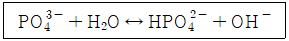
- 8.43
- 10.32
- 12.32
- 13.32
(정답률: 47%)
26. 0.18M NaCl용액에 담겨있는 은 전극의 전위(V)는? (단, 기준전극은 표준수소전극(SHE)이고, Ag+ + e- ⇄ Ag(s), E° = 0.799V, AgCl의 용해도곱상수는 1.8×10-8 이다.)
- 0.085
- 0.385
- 0.843
- 1.21312
(정답률: 43%)
27. CuI(s)와 Cu+의 반쪽반응식과 표준환원전위가 아래와 같을 때, 25℃에서 CuI(s)의 용해도곱상수(Ksp)에 대한 표준환원전위 관계식으로 옳은 것은?
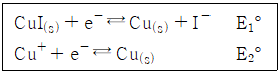
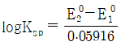
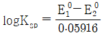
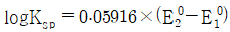
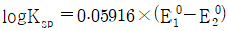
(정답률: 51%)
28. 흑연로 원자흡수 분광기에 관한 설명 중 틀린 것은?
- 열분해 흑연으로 코팅한 흑연관의 전기저항으로 온도를 올린다.
- 탄소로 이루어진 것 때문에 불활성기체를 사용하나, 회화단계에서는 일시적으로 산소를 사용할 수도 있다.
- 원자화 단계에서는 온도와 가스의 흐름을 고정시키고 측정한다.
- 흑연로 튜브는 여러 가지 모양이 있는데, transverse 형태보다 longitudinal 형태가 더 고른 온도 분포를 갖는다.
(정답률: 49%)
29. 전이에 필요한 에너지가 가장 큰 것은?
- 분자 회전
- 결합 전자
- 내부 전자
- 자기장 내에서 핵스핀
(정답률: 63%)
30. 원자흡수분광법(AAS)에서 주로 사용되는 연료가스는 천연가스, 수소, 아세틸렌이다. 또한 산화제로서 공기, 산소, 산화이질소가 사용된다. 가장 높은 불꽃온도를 내는 연료가스와 산화제의 조합은?
- 수소 - 산소
- 천연가스 - 공기
- 아세틸렌 - 산화이질소
- 아세틸렌 – 산소
(정답률: 63%)
31. Br2의 표준전극전이는 아래와 같이 상에 따라 다르다. 이와 관련한 설명으로 옳지 않은 것은?
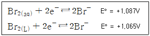
- Br2(aq)에 대한 표준전극전위는 가상적인 값이다.
- Br2(L)에 대한 표준전극전위는 포화된 용액에만 적용된다.
- Br2(L)에 대한 표준전극전위는 불포화된 용액에만 적용된다.
- 과량의 Br2(L)로 포화되어 있는 0.01M KBr용액의 전극전위 계산 시 1.065V를 사용해야 한다.
(정답률: 66%)
32. 아래의 이온반응이 염기성 용액에서 일어날 때, 이온반응식이 올바르게 완결된 것은?
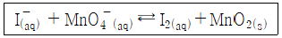
- 6I- + 4H2O + 2MnO4- → 3I2 + 2MnO2 + 8OH-
- 6I- + 2MnO4- → 3I2 + 2MnO2 + 2O2
- 4I- + 2H2O + 2MnO4- → 2I2 + 2MnO2 + 8H+
- 2I- + 2H2O + 2MnO4- → 3I2 + 2MnO2 + 2OH- + H2
(정답률: 63%)
33. 산성비의 발생가 가장 관계가 없는 반응은?
- Ca2+(aq) + CO32-(aq) → CaCO3(s)
- S(s) + O2(g) → SO2(g)
- N2(g) + O2(g) → 2NO(g)
- SO3(g) + H2O(L) → H2SO4(aq)
(정답률: 76%)
34. 0.10M I- 용액 50mL를 0.20M Ag+ 용액을 적정하고자 한다. Ag+용액 25mL를 첨가하였을 때, I-의 농도(mol/L)를 나타내는 식은? (단, Ksp는 용해도곱상수를 의미한다.)
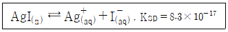
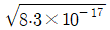
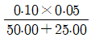
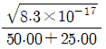
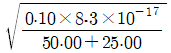
(정답률: 49%)
35. 어떤 산-염기 적정곡선이 아래와 같을 때, 적정물질을 가장 적절하게 설명한 것은?
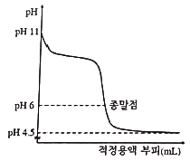
- 약산을 강염기로 적정
- 약염기를 강산으로 적정
- 약염기를 약산으로 적정
- 약산을 약염기로 적정
(정답률: 67%)
36. EDTA를 이용한 착물형성적정법에 대한 설명 중 틀린 것은?
- 여러 자리 리간드(multidentate ligand)인 EDTA는 적정 분석에서 많이 사용되는 시약이다.
- 금속과 리간드의 반응에 대한 평형상수를 형성상수(formation constant)라 한다.
- EDTA는 H6Y2+로 표시되는 사양성자계이다.
- EDTA는 대부분의 금속이온과 전하와는 무관하게 1:1 비율로 착물을 형성한다.
(정답률: 63%)
37. NaF와 NaClO4이 0.⑤0M 녹아 있는 두 수용액에서 불화칼슘(CaF2)을 포화용액으로 만들었다. 각 용액에 녹은 칼슘 이온(Ca2+)의 몰농도의 비율(
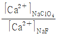
)는? (단, 용액의 이온세기가 0.⑤0M 일 때, Ca2+와 F-의 활동도계수는 각 0.485, 0.81 이고, CaF2의 용해도곱상수는 3.9×10-11 이다.)- 28
- 123
- 1568
- 6383
(정답률: 27%)
38. 용해도에 대한 설명 중 틀린 것은?
- 일정 압력하에서 물 속에서 기체의 용해도는 온도가 증가함에 따라 증가한다.
- 액체 속 기체의 용해도는 기체의 부분압력에 비례한다.
- 탄산음료를 차갑게 해서 마시는 것은 기체의 용해도를 증가시키기 위함이다.
- 잠수부들이 잠수할 경우 받는 압력의 증가로 인해 혈액 속의 공기의 양은 증가한다.
(정답률: 66%)
39. 완충용액에 대한 설명으로 틀린 것은?
- 완충용액의 pH는 이온세기와 온도에 의존하지 않는다.
- 완충용량이 클수록 pH 변화에 대한 용액의 저항은 커진다.
- 완충용액은 약염기와 그 짝산으로 만들 수 있다.
- 완충용량은 산과 그 짝염기의 비가 같을 때 가장 크다.
(정답률: 70%)
40. 납축전지의 전체 반응식이 아래와 같을 때, 완결된 반응식의 PbSO4(s) 계수(γ)는?
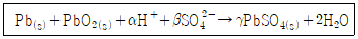
- 1
- 2
- 3
- 4
(정답률: 77%)
3과목: 화학물질 구조분석
41. 크기별 배제(size exclusion)크로마토그래피에 대한 설명으로 틀린 것은?
- 분리 시간이 비교적 짧고 시료 손실이 없다.
- 이성질체와 같이 비슷한 크기의 시료분리에 적합하다.
- 거대 중합체나 천연물의 분자량 또는 분자량 분포를 측정할 수 있다.
- 분석물과 정지상(stationary phase)사이에 화학적, 물리적 상호작용이 일어나지 않는다.
(정답률: 64%)
42. 시차열분석법(Differential Thermal Analysis; DTA)에 대한 설명으로 틀린 것은?
- DTA는 시료와 기준물을 가열하면서 이 두 물질의 온도 차이를 온도 함수로 측정하는 방법이다.
- 시차열분석도(DTA thermogram)에서 봉우리 면적은 물리·화학적 엔탈피 변화에만 관계된다.
- DTA로 중합체를 분석할 때, 유리 전이 온도의 기준선 변화는 상평형에 따른 열용량의 변화에 기인된 것이다.
- 중합체의 결정형성은 발열과정으로서 시차열분석도(DTA thermogram)에서 최대 봉우리로 나타난다.
(정답률: 52%)
43. 질량분석기 중 나노초의 레이저 펄스를 이용해 고 분자량의 바이오시료 측정에 가장 유용한 것은?
- 사중극자(Quadrupole) 질량분석기
- Sector 질량분석기
- TOF(Time Of Flight) 질량분석기
- Orbitrap 질량분석기
(정답률: 57%)
44. HCl을 NaOH로 적정 시 conductance의 변화를 바르게 나타낸 것은?
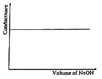
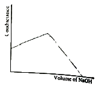
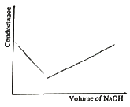
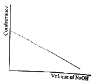
(정답률: 68%)
45. 액체크로마토그래피에서 사용되는 전치 칼럼(precolumn)에 대한 설명으로 틀린 것은?
- 청소부 컬럼(Scavenger column)은 분석 칼럼의 정지상의 손실을 최소화하기 위해 사용한다.
- 보호 컬럼(Guard column)의 충전물 조성은 분석 컬럼의 조성과 동일한 정지상으로 충전된 것이 좋다.
- 청소부 컬럼(Scavenger column)은 이동상에 분석 칼럼의 충진물이 사전에 포화되지 않도록 조절하는 역할을 한다.
- 보호 컬럼(Guard column)은 보호 컬럼의 정자상에 강하게 잔류되는 화합물 및 입자성 물질과 같은 불순물로부터의 오염을 방지하는 역할을 한다.
(정답률: 40%)
46. 열무게분석(ThermoGravimetric Analysis; TGA)기기의 일반적인 구성이 아닌 것은?
- 열 저울
- 전기로
- 열전기쌍
- 기체 주입장치
(정답률: 41%)
47. 기체 또는 액체 크로마토그래피에 응용되는 직접적인 물리적 현상으로 가장 거리가 먼 것은?
- 흡착
- 극성
- 분배
- 승화
(정답률: 67%)
48. CH3CH2CH2Cl을 1H Nuclear Magnetic Resonance; NMR로 분석하였다. 가운데 탄소인 메틸렌에 있는 수소의 다중선의 수는?
- 3
- 5
- 6
- 12
(정답률: 51%)
49. 열무게분석법(ThermoGravimetric Analysis; TGA)를 이용하여 시료 CaC2O4·H2O를 분석할 때, 서모그램 상 두 번째로 높은 온도(420~660℃)에서 나타나는 수평영역에 해당하는 화합물은? (단, 분석조건은 비활성 기체 속에서 5℃/min 상승시키면서 980℃까지 온도를 올렸다 가정한다.)
- CaC2O4·H2O
- CaCO3
- CaO
- CaC2O4
(정답률: 57%)
50. 시료물질과 기준물질을 조절된 온도프로그램으로 가열하면서 이 두 물질에 흘러 들어간 에너지 차이를 시료온도의 함수로 측정하는 열량분석법은?
- 시차주사열량법(Differential Scanning Calorimertyl DSC)
- 열무게분석법(ThermoGravimetric Analysis; TGA)
- 시차열분석법(Differential Thermal Analysis; DTA)
- 직접주사엔탈피법(Direct-Injection Enthalpimetry; DIE)
(정답률: 69%)
51. 유리전극을 사용하여 용액의 pH를 측정할 때 오차에 영향을 미치지 않는 것은?
- 접촉전위 오차
- 나트륨(Na+) 오차
- 평형시간 오차
- 습도 오차
(정답률: 56%)
52. 분자질량분석법에서 분자량이 83인 C6H11+의 분자량 M에 대한 M+1 봉우리 높이 비는? (단, 가장 많은 동위 원소에 대한 상대 존재 백분율은 2H : 0.015, 13C : 1.08 이다.)
- (M+1)/M = 6.65%
- (M+1)/M = 5.55%
- (M+1)/M = 4.09%
- (M+1)/M = 3.36%
(정답률: 42%)
53. 비극성 유기시료를 HPLC를 이용하여 분리·분석 시 정지상에 비극성물질을, 이동상에 극성물질을 사용하는 크로마토그래피의 명칭은?
- 정상크로마토그래피
- 역상크로마토그래피
- 결합상크로마토그래피
- 기울기용리크로마토그래피
(정답률: 69%)
54. 25℃, 1기압에서 Ca2+ 이온의 농도가 10배 변할 때 Ca2+ 이온 선택성 전극의 전위는?
- 2배 증가한다.
- 10배 증가한다.
- 약 30mV 변화한다.
- 약 60mV 변화한다.
(정답률: 49%)
55. Ag2SO3 + 2e- ⇄ 2Ag + SO32- 반쪽반응의 표준환원전위에 가장 가까운 값(V)은? (단, Ag2SO3의 용해도곱 상수는 1.5×10-14이고, 은 이온이 은 금속으로 환원되는 표준 환원전위는 +0.799V 이다.)
- -0.019
- +0.39
- +0.80
- +1.21
(정답률: 35%)
56. 다음 중 시료의 분자량 측정에 가장 적합하지 않은 이온화 방법은?
- 빠른원자충격법(Fast Atom Bombardment; FAB)
- 전자충격이온화법(Electron Impact ionization; EI)
- 장탈착법(Field Desorptin; FD)
- 장이온화법(Field Ionization; FI)
(정답률: 51%)
57. IR spectroscopy 의 적외선 변환기로 사용되지 않는 것은?
- 광전도 변환기
- 파이로전기 변환기
- 열 변환기
- 광촉매 변환기
(정답률: 41%)
58. 100 MHz로 작동되는 1H Nuclear Magentic Resonance; NMR에서 TMS로부터 130Hz 떨어져서 공명하는 신호의 화학적 이동값(ppm)은?
- 0.77
- 1.3
- 7.7
- 13.0
(정답률: 55%)
59. 질량 스펙트럼의 세기는 이온화된 입자의 상대적 분포를 의미한다. 분포도가 가장 복잡하게 얻어지는 이온화 방법은?
- 전자이온화법(Electron Ionization; EI)
- 장이온화법(Field Ionization; FI)
- 장탈착법(Field Desorption; FD)
- 화학이온화법(Chemical Ionizatin; CI)
(정답률: 48%)
60. 핵자기공명분광법에 대한 설명 중 옳지 않은 것은?
- 화학적 이동은 핵 주위를 돌고 있는 전자들에 의해서 생성되는 작은 자기장에 의해 일어난다.
- 스핀-스핀 갈라짐의 근원은 한 핵의 자기 모멘트가 바로 인접한 핵의 자기 모멘트와 상호작용하기 때문이다.
- 사용하는 내부표준물은 연구대상 핵과 용매시스템과 상관없이 일정하며, 주로 사용하는 화합물은 사메틸실란(tereamethyl silane; TMS)이다.
- NMR 스펙트럼의 가로축 눈금은 실험하는 동안 측정할 수 있는 내부 표준물의 공명 봉우리에 대해 공명흡수 봉우리들의 상대적 위치로 나타내는 것이 편리하다.
(정답률: 51%)
4과목: 시험법 밸리데이션
61. 액체 크로마토그래피에서 정찰용(scouting) 기울기 용리를 시행하여 얻은 결과의 해석으로 틀린 것은? (단, △t는 크로마토그램의 첫 번째 봉우리와 마지막 봉우리의 머무름시간의 차이이며, tG는 기울기 시간이다.)
- △t/tG ＜ 0.25 이면, 등용매 용리를 사용한다.
- △t/tG ＞ 0.40 이면, 기울기 용리를 사용한다.
- 0.25 ＜ △t/tG ＜ 0.40 이면, 등용매 용리와 기울기 용리 둘 다 사용할 수 있으며, 장비의 가용성(availability)과 시료의 복잡성에 따라 둘 중 하나를 선택한다.
- 0.25 ＜ △t/tG ＜ 0.40 이면, 정찰용 기울기 용리에서 tG의 0.4배 시점에 해당하는 조성의 이동상을 사용하여 등용매 용리로 분리한다.
(정답률: 45%)
62. 불꽃이온화 검출기의 base를 교체할 때 기기의 커버를 제거한 후에서 검출기 몸체를 제거하기 이전까지의 조작에서 제일 나중에 이루어지는 조작은?
- insulator 제거
- thermal strap 제거
- collector assembly 분리
- 검출기 점화장치의 제거
(정답률: 50%)
63. 실험실내 정밀성 평가의 대표적인 변동요인이 아닌 것은?
- 시약
- 시험일
- 시험자
- 시험장비
(정답률: 50%)
64. 빈 바이알의 질량이 76.99±0.03g이고 약 10g의 탄산칼슘을 넣고 잰 바이알의 질량이 87.36±0.03g 이였을 때, 바이알에 담긴 탄산칼슘의 질량(g)은?
- 10.37±0.04
- 10.37±0.042
- 10.370±0.04
- 10.370±0.042
(정답률: 61%)
65. 실험 결과의 의심스러운 측정값을 버릴 것인지 보유할 것인지를 판단하는데 간단하며 널리 사용되고 있는 통계학적 시험법은?
- t-시험법
- Q-시험법
- F-시험법
- ANOVA-시험법
(정답률: 54%)
66. 분석방법의 유효성평가에서 정확도를 높이기 위한 방법을 모두 고른 것은?
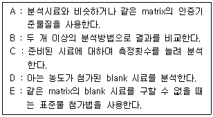
- A, B, C, D, E
- A, B, C, D
- A, B, D, E
- A, B, E
(정답률: 43%)
67. 분석 장비의 시험장비 밸리데이션 결과 문서에 포함되지 않는 밸리데이션 항목은?
- DQ(Design Qualification)
- CQ(Calibration Qualification)
- OQ(Operatinal Qualification)
- PQ(Performance Qualification)
(정답률: 57%)
68. 정량 한계를 산출하는 데 적당한 신호 대 잡음비는?
- 2 : 1
- 3 : 1
- 5 : 1
- 10 : 1
(정답률: 54%)
69. 전처리 과정의 정밀성 중 반복성은 시험농도의 100%에 상당하는 농도에서 검체의 열적인 분해가 없는 한, 단시간 간격에 걸쳐 분석법의 전 조작을 반복 측정하여 상대 표준 편차값이 1.0% 이내로 할 때 최소 반복측정 횟수는?
- 1
- 2
- 3
- 6
(정답률: 64%)
70. 밸리데이션 항목에 대한 설명 중 틀린 것은?
- 정확성 : 측정값이 일반적인 참값 또는 표준값에 근접한 정도
- 정밀성 : 균일한 검체로부터 여러 번 채취하여 얻은 시료를 정해진 조건에 따라 측정하였을 때 각각의 측정값들 사이의 분산 정도
- 완건성 : 시험방법 중 일부 매개변수가 의도적으로 변경되었을 때 측정값이 영향을 받지 않는지에 대한 척도
- 검출한계 : 검체 중에 존재하는 분석 대상물질의 함유량으로 정확한 값으로 정량되는 검출 가능 최소량
(정답률: 53%)
71. 분석시험의 정밀성을 평가하기 위해 아래와 같은 HPLC 측정값으로 회수율을 계산했을 때 회수율에 대한 상대표준편차(%RSD)는?
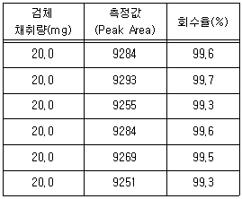
- 0.166
- 0.167
- 0.168
- 0.169
(정답률: 51%)
72. 의약품 제조에서 시험법 재밸리데이션이 필요한 경우가 아닌 것은?
- 시험방법이 변경된 경우
- 주성분의 함량이 변경된 경우
- 원료의약품의 합성방법이 변경된 경우
- 원개발사의 밸리데이션 자료를 확보한 경우
(정답률: 73%)
73. 아래 측정값의 변동계수는?
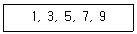
- 183%
- 133%
- 63%
- 13%
(정답률: 58%)
74. 세 곳의 분석기관에서 측정된 농도가 다음과 같을 때, 가장 정밀도가 높은 기관은?
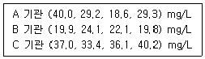
- 모두 같다.
- A 기관
- B 기관
- C 기관
(정답률: 44%)
75. 불확정도 전파와 유효숫자를 고려하였을 때, 4.6(±0.⑤)×2.11(±0.03)의 계산 결과는?
- 9.7(±0.2)
- 9.71(±0.2)
- 9.7(±0.06)
- 9.706(±0.06)
(정답률: 43%)
76. 분석장비의 소모품으로 탐침(probe)이 필요한 장비는?(문제 오류로 가답안 발표시 3번으로 발표되었지만 확정답안 발표시 모두 정답처리 되었습니다. 여기서는 가답안인 3번을 누르면 정답 처리 됩니다.)
- NMR
- AA
- EM
- XPS
(정답률: 74%)
77. 밸리데이션에서 사용하는 각 용어에 대한 설명으로 틀린 것은?
- 시험방법 밸리데이션 : 의약품 등 화학제품의 품질관리를 위한 시험방법의 타당성을 미리 확인하는 과정
- 확인시험 : 검체 중 분석대상 물질을 확인하는 시험으로 물리화학적 특성을 표준품의 특성과 비교하는 방법을 일반적으로 사용
- 역가시험 : 검체 중에 존재하는 분석 대상 물질의 역가를 정확하게 측정하는 것으로 주로 정성분석을 사용
- 순도시험 : 검체 중 불순물의 존재 정도를 정확하게 측정하는 시험으로 한도시험이 있음
(정답률: 59%)
78. 정밀저울로 시료의 무게를 측정한 결과가 0.0⑤70g일 때, 측정값의 유효숫자 자릿수는?
- 2자리
- 3자리
- 4자리
- 5자리
(정답률: 67%)
79. 프탈산수소칼륨(KHP) 시료 2.1283g을 페놀프탈레인 지시약을 사용하여 0.1084N 염기표준용액으로 적정하였더니 종말점에서 42.58mL가 소비되었을 때, 초기 시료 중 KHP의 농도(wt%)는? (단, KHP의 분자량은 204.2 g/mol)
- 34.46
- 44.29
- 54.25
- 64.18
(정답률: 55%)
80. 분석과정에서 생기는 오차 중 반응의 미완결, 부반응, 공침 등 화학반응계가 원인이 되어 나타나는 오차는?
- 방법 오차
- 조작 오차
- 화학 오차
- 기기 및 시약 오차
(정답률: 41%)
5과목: 환경·안전관리
81. 지정폐기물에 대한 설명으로 잘못된 것은?
- 처리방법으로는 주로 소각과 매립에 의해 처리한다.
- 폐기물의 종류에 따라 분리수거한 후 주로 위탁처리한다.
- 지정폐기물 중 가장 많이 발생하는 것은 폐유기용제와 폐유이다.
- 환경오염이나 인체에 위해를 줄 수 있는 해로운 물질로 대통령령으로 정하는 폐기물이다.
(정답률: 61%)
82. 중화적정에 대한 설명으로 틀린 것은?(문제 오류로 가답안 발표시 1번으로 발표되었지만 확정답안 발표시 1, 4번이 정답처리 되었습니다. 여기서는 가답안인 1번을 누르시면 정답 처리 됩니다.)
- 메틸오렌지는 강산과 강염기의 중화 반응에 활용되는 지시약이다.
- 중화에 필요한 표준 용액의 양으로부터 시료 중의 산 또는 염기의 농도를 알 수 있다.
- 시료 용액 중에 포함된 산이나 염기를 염기나 산의 표준 용액으로 적정하는 것이다.
- 산과 염기의 중화는 당량 대 당량으로 일어나므로, 완전중화는 산과 염기는 그램 당량수가 같아야 일어난다.
(정답률: 73%)
83. 다음 중 황산이 사용되어 합성되는 화학물질이 아닌 것은?
- Acetamide
- Diethyl ether
- Ethyl acetate
- Potassium Sulfate
(정답률: 43%)
84. 고압가스 용기 색상 중 수소 가스를 나타내는 것은?
- 녹색
- 백색
- 황색
- 주황색
(정답률: 41%)
85. 화합물의 안전관리에 대한 설명 중 틀린 것은?
- 과염소산, 과산화수소, 질산, 할로겐 화합물 등은 산화제로서 적은 양으로 강렬한 폭발을 일으킬 수 있으므로 방호복, 고무장갑, 보안경 및 보안면 같은 보호구를 착용하고 취급하여야 한다.
- 나노입자 및 초미세 금속 분말을 취급시에는 폐질환, 호흡기 질환 등을 일으킬 수 있으므로 방진 마시크 등의 보호구를 착용해야 한다.
- 대부분의 미세한 금속 분말은 물과 산의 접촉으로 수소 가스를 발생하고 발열한다. 특히, 습기와 접촉할 때 자연 발화의 위험이 있어 폭발할 수 있으므로 특별히 주의한다.
- 질산에스터류, 나이트로 화합물, 아조 화합물, 하이드라진 유도체, 하이드록실아민 등은 연소속도가 느리나, 가열, 충격, 마찰 등으로 폭발할 수 있으므로 주의해야 한다.
(정답률: 64%)
86. 화학물질 분석 중 물질에 대한 확인이 전제되지 않는 화재상황 시 아래 보기 중 적절한 대응을 모두 나타낸 것은?
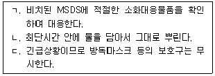
- ㄱ, ㄴ, ㄷ
- ㄴ, ㄷ
- ㄱ, ㄷ
- ㄱ
(정답률: 78%)
87. 다음 중 유해폐기물 처리를 위한 무해화 기술이 아닌 것은?
- 고정화-유리화(immobilization by vitrification)
- 고정화-열경화성 캡슐화(immobilization by thermosetting encapsulation)
- 열분해 가스화(gasificatio by thermal decomposition)
- 플라스마 소각(plasma incineration)
(정답률: 40%)
88. 소방시설법령상 1급 소방안전관리대상물의 소방안전관리자의 선임 자격이 아닌 것은?
- 소방설비기사 또는 소방설비산업기사의 자격이 있는 사람
- 산업안전기사 또는 산업안전산업기사의 자격을 취득한 후 2년 이상 2급 소방안전관리대상물 또는 3급 소방안전관리대상물의 소방안전관리자로 근무한 실무경력이 있는 사람
- 소방공무원으로 5년 이상 근무한 경력이 있는 사람
- 위험물기능장·위험물산업기사 또는 위험물기능사 자격으로 위험물안전관리자로 선임된 사람
(정답률: 53%)
89. 다음 폐기물 중 지정폐기물을 모두 선택하여 나열한 것은?
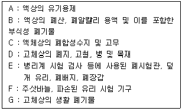
- A, B, C, D, E, F, G
- A, B, C, D, E, F
- A, B, C, E, F
- A, B, E, F
(정답률: 62%)
90. 어떤 반응계에서 화학반응이 진행되는 과정을 육안으로 확인할 수 잇는 경우에 해당되지 않는 것은?
- 모든 화학반응에는 열과 빛이 발생하는 발열 현상이 수반된다.
- 탄산수소나트륨과 시트르산이 반응하는 용액에서 기포발생을 확인한다.
- 황산구리 용액에 암모니아수를 넣으면 연한 청색이 진한 청색으로 변한다.
- 두 가지 수용액이 혼합되어 고체 입자가 형성되는 반응에 의해 불용성 물질의 침전이 발생한다.
(정답률: 68%)
91. 분석 업무 폭발성 반응을 일으킬 수 있는 물질이 아닌 것은?
- 재
- 금속분말
- 유기질소화합물
- 산 및 알칼리류
(정답률: 67%)
92. 지정슈량 20배 이하의 위험물을 저장 또는 취급하는 옥내저장소가 갖추어야 할 조건이 아닌 것은?(문제 오류로 가답안 발표시 4번으로 발표되었지만 확정답안 발표시 모두 정답처리 되었습니다. 여기서는 가답안인 4번을 누르면 정답 처리 됩니다.)
- 저장창고의 벽·기둥·바다·보 및 지붕이 내화구조여야 한다.
- 저장창고의 출입구에 수시로 열 수 있는 자동폐쇄방식의 갑종방화문이 설치되어 있어야 한다.
- 저장창고에 창을 설치하지 않아야 한다.
- 저장창고는 지면에서 처마까지의 높이가 6m 이상인 복층건물로 하고, 그 바닥을 지반면보다 낮게 하여야 한다.
(정답률: 72%)
93. 물질안전보건자료(MSDS) 구성항목이 아닌 것은?
- 화학제품과 회사에 관한 정보
- 화학제품의 제조방법
- 취급 및 저장방법
- 유해·위험성
(정답률: 62%)
94. 위험물안전관리법령상 제2류 위험물인 가연성 고체로 분류되지 않는 것은?
- 유황
- 철분
- 나트륨
- 마그네슘
(정답률: 49%)
95. 다음 NFPA 라벨에 해당하는 물질에 대한 설명으로 틀린 것은?
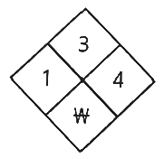
- 폭발성이 대단히 크다.
- 물에 대한 반응성이 있다.
- 일반적인 대기환경에서 쉽게 연소될 수 있다.
- 노출 시 경미한 부상을 유발할 수 있으나 특별한 주의가 필요하진 않다.
(정답률: 66%)
96. 등유에 관한 설명 중 틀린 것은?
- 물보다 가볍다.
- 증기는 공기보다 가볍다.
- 물에 용해되지 않는다.
- 가솔린보다 인화점이 높다.
(정답률: 61%)
97. 연구실안전법령상 안전점검의 종류와 실시시기에 대한 설명으로 옳은 것은?
- 일상점검 : 연구개발활동에 사용되는 기계·기구·전기·약품·병원체 등의 보관상태 및 보호장비의 관리실태 등을 육안으로 실시하는 점검
- 정기점검 : 6개월에 1회 이상 실시
- 특별안전점검 : 연구개발활동에 사용되는 기계·기구·전기·약품·병원체 등의 보관상태 및 보호장비의 관리실태 등을 안전점검기기를 이용하여 실시하는 세부적인 점검
- 특별안전점검 : 저위험연구실 및 우수연구실인증에 종사하는 연구활동종사자가 필요하다고 인정하는 경우에 실시
(정답률: 49%)
98. 화학물질관리법령상 화학물질 보관·저장 관리대장의 작성 내용이 아닌 것은?
- 함량
- 위탁인
- 독성농도
- 제품(상품)명
(정답률: 46%)
99. 물질들의 폭발에 대한 설명 중 틀린 것은?
- HF 가스 및 용액은 극한 독성을 나타내고 폭발할 수 있다.
- 과염소산은 고농도일 때 모든 유기화물과 반응하여 폭발할 수 있으나 무기화학물과는 비교적 안정하게 반응한다.
- 밀폐공간내의 유화가루 및 금속분은 분진폭발의 위험이 있다.
- 유기질소 화합물은 가열, 충격, 마찰 등으로 폭발할 수 있다.
(정답률: 69%)
100. 할로겐화합물의 소화약제에서 할론 2402의 화학식은?
- CBr2F2
- CBrClF2
- CBrF3
- C2Br2F4
(정답률: 67%)